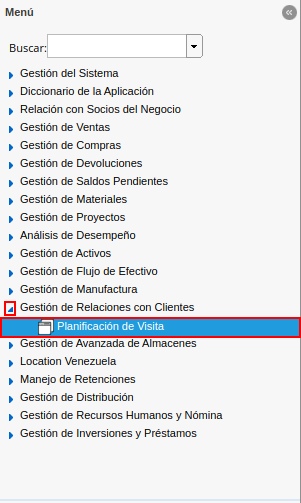
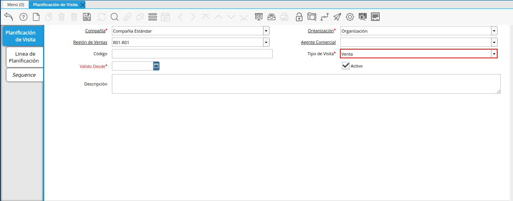

Planificación de Visitas
Ubique y seleccione en el menú de ADempiere, la carpeta “Gestión de Relaciones con Clientes”, luego seleccione la ventana “Planificación de Visita”.

Imagen 1. Menú de ADempiere
Podrá visualizar la ventana “Planificación de Visita”, con los diferentes registros de planificación de visitas en ADempiere. Donde debe seleccionar el icono “Registro Nuevo”, ubicado en la barra de herramientas de ADempiere, para crear un nuevo registro de planificación.
Imagen 2. Icono Registro Nuevo
Seleccione en el campo “Organización”, la organización para la cual se encuentra realizando la planificación de visitas.
Imagen 3. Campo Organización

Seleccione en el campo “Región de Ventas”, la región de ventas a la cual se le esta realizando la planificación de visitas.
Imagen 4. Campo Región de Ventas

Seleccione en el campo “Agente Comercial”, el socio del negocio vendedor al cual se le esta realizando la planificación de visitas.
Imagen 5. Campo Agente Comercial

Introduzca en el campo “Código”, el código para el registro de planificación que se encuentra realizando.
Imagen 6. Campo Código

Seleccione en el campo “Tipo de Visita”, el tipo de visita que se encuentra planificando.

Imagen 7. Campo Tipo de Visita
Seleccione en el campo “Válido Desde”, la fecha de inicio de la planificación de visitas que se encuentra realizando.
Imagen 8. Campo Válido Desde

Introduzca en el campo “Descripción”, una breve descripción que explique de forma clara y general, la planificación que se encuentra realizando.
Imagen 9. Campo Descripción
Note
Recuerde seleccionar el icono “Guardar Cambios”, ubicada en la barra de herramientas de ADempiere, para guardar el registro de los campos de la ventana “Planificación de Visita”.

Seleccione la pestaña “Línea de Planificación”, para crear los diferentes registros de planificación de visitas correspondiente al tipo de visita seleccionada en el campo “Tipo de Visita”.
Imagen 10. Pestaña línea de planificación

Podrá visualizar el campo “Planificación de Visita”, el registro en el que se encuentra creando la planificación de visitas.
Imagen 11. Campo Planificación de Visita

Seleccione en el campo “Socio del Negocio”, el socio del negocio cliente al cual se le encuentra planificando la visita.
Imagen 12. Campo Socio del Negocio

Seleccione en el campo “Dirección del Socio del Negocio”, la dirección de ubicación del socio del negocio seleccionado en el campo “Socio del Negocio”.
Imagen 13. Campo Dirección del Socio del Negocio

Seleccione en el campo “Dirección Factura”, la dirección a la cual se va a realizar la visita que se encuentra planificando.
Imagen 14. Campo Dirección Factura

Seleccione en el campo “Región de Ventas”, la región de ventas de la localización a la cual se va a realizar la visita que se encuentra planificando.
Imagen 15. Campo Región de Ventas

Seleccione en el campo “Usuario”, el socio del negocio vendedor que va a realizar la visita que se encuentra planificando.
Imagen 16. Campo Usuario

Seleccione en el campo “Tipo de Frecuencia”, la frecuencia con la cual se va a realizar la visita que se encuentra planificando.
Imagen 17. Campo Tipo de Frecuencia

Seleccione en el campo “Válido Desde”, la fecha de inicio de la planificación de visitas que se encuentra realizando.
Imagen 18. Campo Válido Desde

Introduzca en el recuadro ubicado del lado derecho del campo “Fecha de Inicio”, la hora de inicio de la visita que se encuentra planificando.
Imagen 19. Campo Fecha de Inicio

Introduzca en el recuadro ubicado del lado derecho del campo “Final de Tiempo”, la hora de finalización de la visita que se encuentra planificando.
Imagen 20. Campo Final de Tiempo

Introduzca en el campo “Secuencia”, la secuencia en la cual se va a realizar la visita al socio del negocio cliente seleccionado en el campo “Socio del Negocio”.
Imagen 21. Campo Secuencia
Note
La secuencia indica el orden en el que se van a realizar las visitas a los socios del negocio involucrados en la planificación que se encuentra realizando.

Introduzca en el campo “Descripción”, una breve descripción que explique de forma clara y específica, la planificación que se encuentra realizando.
Imagen 22. Campo Descripción

Por último, podrá visualizar el grupo de checklist de la semana, donde debe tildar los días en los cuales se va a realizar la visita al socio del negocio cliente seleccionado en el campo “Socio del Negocio”.
Imagen 23. Grupo de Checklist
Note
Recuerde seleccionar el icono “Guardar Cambios”, ubicada en la barra de herramientas de ADempiere, para guardar el registro de los campos de la ventana “Planificación de Visita”.

Seleccione la pestaña “Secuencia”, para visualizar la secuencia de los diferentes registros de planificación de visitas correspondiente al tipo de visita seleccionada en el campo “Tipo de Visita”.
Imagen 24. Pestaña Secuencia